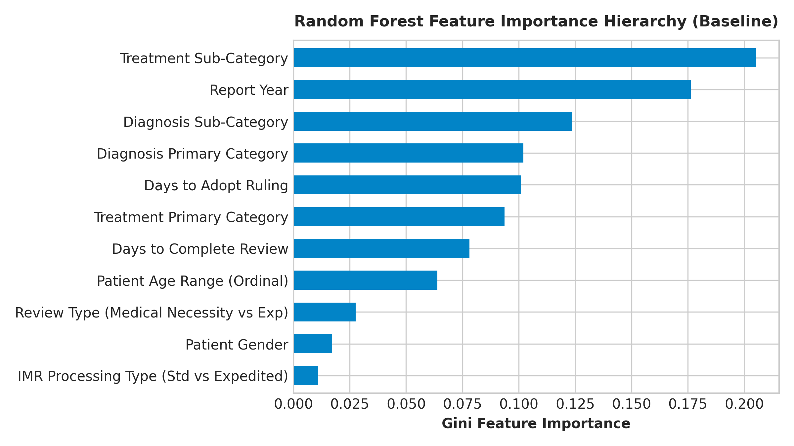

Sprint 2 Milestone Summary (Reporting Period: 09 Nov – 22 Nov 2026)
Sprint 2 successfully delivered an automated, leak-free data preprocessing pipeline and established baseline machine learning benchmarks on 41,332 cleaned Independent Medical Review (IMR) determinations from the California DMHC.
41,332
Cleaned Complete Cases (96.7% Retained)
74.7%
Top Baseline ROC-AUC (Random Forest)
72.5%
Precision on Overturned Denials
68.1%
HistGB Accuracy (F1: 0.683)
Sprint 2 Baseline Model Benchmark Leaderboard
Evaluation conducted on strictly isolated, stratified 20% test partition (8,267 held-out records) preserving 52.94% Overturned / 47.06% Upheld class balance:
| Model Architecture | Family | Accuracy | Precision | Recall | F1-Score | ROC-AUC |
|---|---|---|---|---|---|---|
| Random Forest (100 trees, depth 12) | Ensemble Bagging | 67.22% | 72.52% | 61.32% | 0.665 | 0.747 |
| Hist Gradient Boosting (LightGBM equiv.) | Gradient Boosting | 68.07% | 71.97% | 65.00% | 0.683 | 0.745 |
| Logistic Regression (Standardized) | Linear Baseline | 58.86% | 59.88% | 67.56% | 0.635 | 0.632 |
Data Engineering & Leakage Mitigation Strategy
- Deduplication: 39 exact duplicate entries removed from raw ingestion.
- Missing Value Discovery: Audited that missing demographic entries (685 rows) and review turnaround duration (691 rows) occupied non-overlapping cohorts, resolved via complete case analysis.
- Target Leakage Mitigation: Isolated physician reviewer text narratives (
Findings) from tabular models because post-hoc summaries contained verbatim outcome statements (e.g., "Therefore, the Health Plan denial should be upheld"). - Feature Representation: Mapped patient age into 7 ordered lifecycle bands (0–6), and applied high-cardinality label encodings to 532 diagnosis subcategories and 498 treatment classifications.
Sprint 2 Key Figures & Visual Analytics
ROC-AUC Model Comparison

Clinical Feature Importance

Upcoming Sprint 3: Machine Learning Optimization (24 Nov – 07 Dec 2026)
- 5-Fold Cross-Validated Hyperparameter Optimization (GridSearchCV/RandomizedSearchCV) across Random Forest, LightGBM, and CatBoost.
- Exploration of frequency encoding and clinical text keyword signals.
- Selection and serialization of champion model (
best_model.pkl) ready for Global SHAP TreeExplainer in Sprint 4.